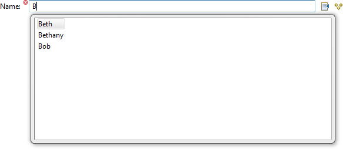
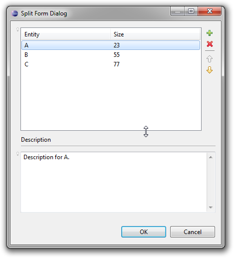

When a property is described to a user in documentation one does it with a series of short statements that define its semantics, such as "must be specified" or "maximum value is 100". When a property is described to Sapphire one does it with a series of annotations, such as @Required or @NumericRange. This duplicate specification is a maintenance problem.
A FactsService provides a means to dynamically derive statements about property's semantics based on property's metadata. The derived facts can then be presented to the user as part of documentation, property editor information popup and in other relevant places.
The concept of deriving facts from metadata has existed in limited capacity in past releases. New for 0.4 is formalization of this system via FactsService API that allows adopters to participate in generation of facts on equal footing with the framework. Also new for 0.4 is a much longer list of annotations that generate corresponding facts.
The InitialValueService produces a value to assign to a property when the containing model element is created.
The concept of an initial value is different from a default value. The initial value is explicitly assigned to the property during containing model element's creation. This includes writing to the backing resource (such as an XML document). In comparison, the default value is used when null is read for a property from the backing resource. As such, the default value is only visible to model consumers (such as the user interface), while the initial value is persisted.
Whether you use an initial value or a default value is frequently dictated by the requirements of the backing resource. As an example, let's consider an XML document that stores phone numbers. In this XML document, the phone number element has a type child element which contains a value like home, mobile, work, etc. Let's further say that semantically, we wish to use mobile phone number type unless specified differently. Now, if the XML schema dictates that the phone number type element is required, we would need to specify "mobile" as the initial value. If the phone number type element is optional, it would be better to specify "mobile" as the default value.
The set of possible types for a list or an element property is usually static and as such can be specified using @Type annotation. However, when the model needs to be extensible or the set of possible types needs to vary due to runtime conditions, a custom PossibleTypesService implementation can now be supplied.
The ContentProposalService provides a conduit for content assist in property editors. If a property has this service, content assist will be automatically enabled in the property editor. The manner in which content assist is presented is specific to the presentation, but usually involves a popup window with proposals, activated by some combination of key strokes (such as CTRL+SPACE).
The framework provides an implementation of ContentProposalService for properties with @PossibleValues annotation or a custom PossibleValuesService, but this service can also be implemented directly by adopters.

Use available screen real estate more efficiently by splitting a form into two or more sections. The sections can be arranged vertically or horizontally. The developer can specify the desired initial distribution of available space among the sections and the provided sashes allow the user to adjust the space allocation as necessary at runtime.
A split form can nest inside another split form. This is particularly useful when the two split forms use different split orientation.
Example
In this example, a dialog is split vertically into two sections. The top section holds a list property editor while the bottom section holds the editor for the description property linked to the selection in the list property editor. The split form allows the user to control the amount of space allocated to the list property editor versus the description text field.
<dialog>
<id>SplitFormDialog</id>
<label>split form dialog</label>
<width>600</width>
<height>400</height>
<scale-vertically>true</scale-vertically>
<content>
<split-form>
<orientation>vertical</orientation>
<scale-vertically>true</scale-vertically>
<section>
<weight>7</weight>
<content>
<property-editor>
<property>List1</property>
<span>true</span>
<show-label>false</show-label>
<child-property>Entity</child-property>
<child-property>Size</child-property>
<scale-vertically>true</scale-vertically>
</property-editor>
</content>
</section>
<section>
<weight>3</weight>
<content>
<separator>
<label>description</label>
</separator>
<switching-panel>
<list-selection-controller>
<property>List1</property>
</list-selection-controller>
<default-panel>
<content>
<label>Select an entry above to view or edit description.</label>
</content>
</default-panel>
<panel>
<key>SplitFormGalleryListEntry</key>
<content>
<property-editor>
<property>Description</property>
<span>true</span>
<show-label>false</show-label>
<scale-vertically>true</scale-vertically>
</property-editor>
</content>
</panel>
<scale-vertically>true</scale-vertically>
</switching-panel>
</content>
</section>
</split-form>
</content>
</dialog>
The new @XmlDocumentType annotation can be used when working with DTD-based documents to easily specify systemId or publicId/systemId pair. Sapphire XML binding will manage the XML DOCTYPE declaration.
Example
@XmlDocumentType( publicId = "-//Sapphire//DTD Root 1.0.0//EN", systemId = "http://www.eclipse.org/sapphire/example.dtd" )
@XmlRootBinding( elementName = "root" )
public interface Root extends IModelElement
{
...
}The above declaration will create an XML document like the following.
<?xml version="1.0" encoding="UTF-8"?>
<!DOCTYPE country PUBLIC "-//Sapphire//DTD Country 1.0.0//EN" "http://www.eclipse.org/sapphire/example.dtd">
<root>
...
</root>Easily copy content of model elements using the new copy method. Copy a few model elements or the entire model. Even copy across different resource stores.
Example
In this example, the copy method is used to duplicate the entities held in a list property.
ModelElementList<Entity> entities = model.getEntities();
for( int i = 0, n = entities.size; i < n; i++ )
{
final Entity original = entities.get( i );
final Entity duplicate = entities.addNewElement();
duplicate.copy( original );
}Here, an entire model is copied to a memory resource. Perhaps the original model instance was loaded from disk via an XML resource.
Model original = ...
Model duplicate = Model.TYPE.instantiate();
duplicate.copy( original );